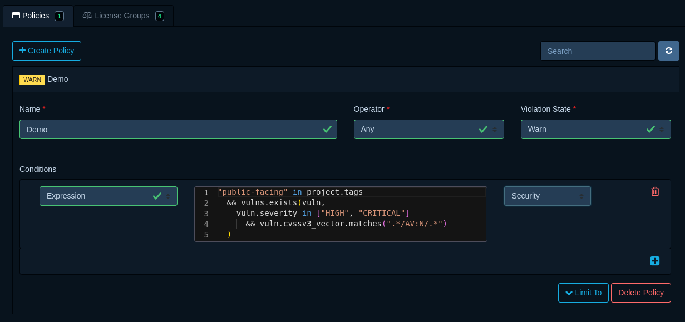

Expressions
Introduction¶
Dependency-Track allows policy conditions to be defined using the Common Expression Language (CEL), enabling more flexibility, and more control compared to predefined conditions.
To use CEL, simply select the subject Expression when adding a new condition. A code editor will appear in which
expressions can be provided.

In addition to the expression itself, it's necessary to specify a violation type, which may be any of License,
Operational, or Security. The violation type aids in communicating what kind of risk is introduced by the
condition being matched.
Syntax¶
The CEL syntax is similar to other C-style languages like Java and JavaScript.
However, CEL is not Turing-complete. As such, it does not support constructs like if statements or loops (i.e. for, while).
As a compensation for missing loops, CEL offers macros like all, exists, exists_one, map, and filter.
Refer to the macros documentation for more details, or have a look at the examples to see how they may
be utilized in practice.
CEL syntax is described thoroughly in the official language definition.
Evaluation Context¶
Conditions are scoped to individual components. Each condition is evaluated for every single component in a project.
The context in which expressions are evaluated in contains the following variables:
| Variable | Type | Description |
|---|---|---|
component |
Component | The component being evaluated |
project |
Project | The project the component is part of |
vulns |
list(Vulnerability) | Vulnerabilities the component is affected by |
now |
google.protobuf.Timestamp |
The current time at the start of evaluation |
Note
Many fields on Component, Project, and Vulnerability are optional.
Use the has() macro to check for presence of optional fields
before accessing them.
Best Practices¶
- Keep expressions simple and concise. The more complex an expression becomes, the harder it gets to determine why
it did or did not match. Use policy operators (
Any,All) to chain multiple expressions if practical. - Call functions last. Custom functions involve additional computation that is more expensive than simple field accesses. Performing any checks on fields first, and calling functions last, oftentimes allows evaluation to short-circuit.
- Remove conditions that are no longer needed. Dependency-Track analyzes the configured expressions to determine what data it has to load from the database in order to evaluate them. The more fields are being accessed, the more data has to be loaded. Removal of outdated conditions thus has a direct positive performance impact.
Examples¶
Component age¶
Besides out-of-date versions, component age is another indicator of potential risk. Components may be on the latest available version, but still be 20 years old.
The following expression matches Components that are two years old, or even older, using the now
variable and timestamp arithmetic:
Component blacklist¶
The following expression matches on the Component's Package URL, using a regular expression in RE2 syntax.
Additionally, it checks whether the Component's version falls into a given vers range using
matches_range, consisting of multiple constraints.
The expression will match:
pkg:maven/com.acme/acme-lib@0.1.0pkg:maven/com.acme/acme-lib@0.9.9
but not:
pkg:maven/com.acme/acme-library@0.1.0pkg:maven/com.acme/acme-lib@0.2.4
Dependency graph traversal¶
The following expression matches Components that are a (possibly transitive) dependency of a Component
with name foo, but only if a Component with name bar is also present in the Project.
To check whether a component is a direct (i.e. non-transitive) dependency:
To check whether a component is exclusively introduced through another component (i.e. no other path in the dependency graph leads to it):
Dependency graph functions support the following Component fields for matching:
| Field | re: prefix |
vers: prefix |
|---|---|---|
uuid |
||
group |
✅ | |
name |
✅ | |
version |
✅ | ✅ |
classifier |
||
cpe |
✅ | |
purl |
✅ | |
swid_tag_id |
✅ | |
is_internal |
The re: prefix enables RE2 regex matching on the field value:
The vers: prefix enables vers range matching on the version field:
Note
When constructing objects like Component on-the-fly, it is necessary to use their version namespace,
i.e. v1. This is required in order to perform type checking, as well as ensuring backward compatibility.
License expression allowlist¶
The following expression matches non-internal Components whose SPDX license expression cannot be satisfied using only the approved set of licenses. License-with-exception combinations are listed as a single compound entry.
When components don't have a license expression, component.resolved_license.id can be used as a fallback.
A single license ID is a valid SPDX expression, so it gets the same version-aware treatment:
License blacklist¶
The following expression matches Components that are not internal to the organization, and have either:
Vulnerability blacklist¶
The following expression matches Components in Projects tagged as 3rd-party, with at least one Vulnerability
being any of the given blacklisted IDs.
Vulnerabilities with high severity in public facing projects¶
The following expression matches Components in Projects tagged as public-facing, with at least one HIGH
or CRITICAL
Vulnerability, where the CVSSv3 attack vector is Network.
Version distance¶
The version_distance function allows matching based on how far behind a component's version
is from the latest known version. The distance is specified using a VersionDistance object with epoch, major,
minor, and patch fields.
The following expression matches components that are more than one major version behind:
Optional field checking¶
CEL does not have a concept of null. Accessing a field that is not set
returns its default value (e.g. "" for strings, 0 for numbers, false for booleans), which can
lead to misleading matches. Use the has() macro to check for field presence before accessing it:
SPDX License Expressions¶
The spdx_expr_* functions evaluate SPDX license expressions. They operate on expression strings
(typically component.license_expression) and can also be used with component.resolved_license.id
as a fallback for components without a license expression.
All license ID comparisons are case-insensitive per the SPDX specification.
Version equivalence¶
Deprecated license IDs are treated as equivalent to their modern counterparts.
For example, GPL-2.0 and GPL-2.0-only are considered the same license.
Version ranges¶
The + operator and -or-later suffix are understood as "this version or any later
version in the same license family." For example, GPL-3.0-only satisfies an allow-list containing
GPL-2.0-or-later, and Apache-1.0+ satisfies an allow-list containing Apache-2.0.
Deprecated WITH-compounds¶
Legacy compound IDs like GPL-2.0-with-classpath-exception are automatically
resolved to their modern WITH expression form (GPL-2.0-only WITH Classpath-exception-2.0).
WITH composites¶
License-with-exception combinations are treated as atomic composites. The full
compound (e.g. "GPL-2.0-only WITH Classpath-exception-2.0") must appear as a single entry in
allow-lists, not as separate license and exception IDs. The license part uses version-aware matching
(e.g. GPL-2.0 WITH ... matches GPL-2.0-only WITH ...), while the exception part requires an exact match.
Function Reference¶
For type definitions, refer to the schema reference.
In addition to the standard definitions of the CEL specification, Dependency-Track offers the following functions.
depends_on¶
Checks whether a Project contains a Component matching the given criteria. Useful for enforcing policies only when specific components are present in a project.
| Name | Type | Description |
|---|---|---|
| receiver | Project | The project to check |
component |
Component | Criteria to match against. Supports re: and vers: prefixes. |
Returns: true if a matching component exists in the project.
graph TD
P["Project"]:::match --> A["foo"]
P --> B["bar"]
A --> C["baz"]:::criteria
A --> D["qux"]
B --> D
classDef match stroke:#22c55e,stroke-width:3
classDef criteria fill:#22c55e,color:#fffTip
project matches because baz exists in its dependency graph.
is_dependency_of¶
Checks whether a Component is a (possibly transitive) dependency of another Component.
| Name | Type | Description |
|---|---|---|
| receiver | Component | The component being evaluated |
component |
Component | Criteria to match the parent against. Supports re: and vers: prefixes. |
Returns: true if the receiver is a dependency (direct or transitive) of a matching component.
graph TD
P["Project"] --> A["foo"]:::criteria
P --> B["bar"]
A --> C["baz"]:::match
A --> D["qux"]:::match
B --> D
classDef match stroke:#22c55e,stroke-width:3
classDef criteria fill:#22c55e,color:#fffTip
baz and qux match since both are dependencies of foo.
qux matches even though it's also reachable through bar.
is_direct_dependency_of¶
Checks whether a Component is a direct (non-transitive) dependency of another Component.
| Name | Type | Description |
|---|---|---|
| receiver | Component | The component being evaluated |
component |
Component | Criteria to match the parent against. Supports re: and vers: prefixes. |
Returns: true if the receiver is a direct dependency of a matching component.
graph TD
P["Project"] --> A["foo"]:::criteria
P --> B["bar"]
A --> C["baz"]:::match
A --> D["qux"]:::match
B --> D
classDef match stroke:#22c55e,stroke-width:3
classDef criteria fill:#22c55e,color:#fffTip
baz and qux match since both are direct children of foo.
With a deeper graph, transitive dependencies do not match:
graph TD
A["foo"]:::criteria --> C["baz"]:::match
C --> E["deep"]:::nomatch
classDef match stroke:#22c55e,stroke-width:3
classDef criteria fill:#22c55e,color:#fff
classDef nomatch stroke:#ef4444,stroke-width:3,stroke-dasharray:5Tip
baz matches since it's a direct child of foo.
deep does not match, as it's a transitive dependency.
is_exclusive_dependency_of¶
Checks whether a Component is exclusively introduced through another Component.
Returns true only if every path from the project root to the receiver passes through a matching component.
| Name | Type | Description |
|---|---|---|
| receiver | Component | The component being evaluated |
component |
Component | Criteria to match the parent against. Supports re: and vers: prefixes. |
Returns: true if the receiver is exclusively introduced through a matching component.
graph TD
P["Project"] --> A["foo"]:::criteria
P --> B["bar"]
A --> C["baz"]:::match
A --> D["qux"]:::nomatch
B --> D
classDef match stroke:#22c55e,stroke-width:3
classDef criteria fill:#22c55e,color:#fff
classDef nomatch stroke:#ef4444,stroke-width:3,stroke-dasharray:5Tip
baz matches since it's only reachable through foo.
qux does not match, as it's also reachable through bar.
matches_range¶
Checks whether a Component's or Project's version falls within a vers range.
| Name | Type | Description |
|---|---|---|
| receiver | Component or Project | The component or project to check |
range |
string |
A vers range string (e.g. "vers:maven/>1.0.0\|<2.0.0") |
Returns: true if the version is within the specified range.
Currently supported versioning schemes:
| Versioning Scheme | Ecosystem |
|---|---|
deb |
Debian / Ubuntu |
generic |
Generic / Any |
golang |
Go |
maven |
Java / Maven |
npm |
JavaScript / NodeJS |
rpm |
CentOS / Fedora / Red Hat / SUSE |
Note
If the ecosystem of the component(s) to match against is known upfront, it's good practice to use the according
versioning scheme in matches_range. This helps with accuracy, as versioning schemes have different nuances
across ecosystems, which makes comparisons error-prone.
spdx_expr_allows¶
Checks whether an SPDX license expression can be satisfied
using only licenses from the given set. For OR expressions, at least one branch must
be satisfiable. For AND expressions, all children must be satisfiable. WITH expressions
are treated as atomic composites (see below).
| Name | Type | Description |
|---|---|---|
expression |
string |
An SPDX license expression |
ids |
list(string) |
Allowed licenses, including WITH composites if needed |
Returns: true if the expression is satisfiable with the given IDs.
Version-range matching is applied automatically:
Tip
WITH expressions (license-with-exception) are matched as a single unit.
The allowed set must contain the full compound entry, not the license and exception separately:
spdx_expr_requires_any¶
Checks whether at least one of the given license IDs is required in every possible satisfaction
of an SPDX license expression. For OR expressions, at least one of
the IDs must be required in all branches. For AND expressions, at least one of the IDs must be
required in at least one child.
| Name | Type | Description |
|---|---|---|
expression |
string |
An SPDX license expression |
ids |
list(string) |
License IDs to check |
Returns: true if at least one of the IDs is always required.
version_distance¶
Checks whether the distance between a Component's current version and its latest known version matches a given VersionDistance.
| Name | Type | Description |
|---|---|---|
| receiver | Component | The component to check |
operator |
string |
Numeric comparator: <, <=, =, !=, >, >= |
distance |
VersionDistance | The version distance to compare against |
Returns: true if the version distance satisfies the comparison.